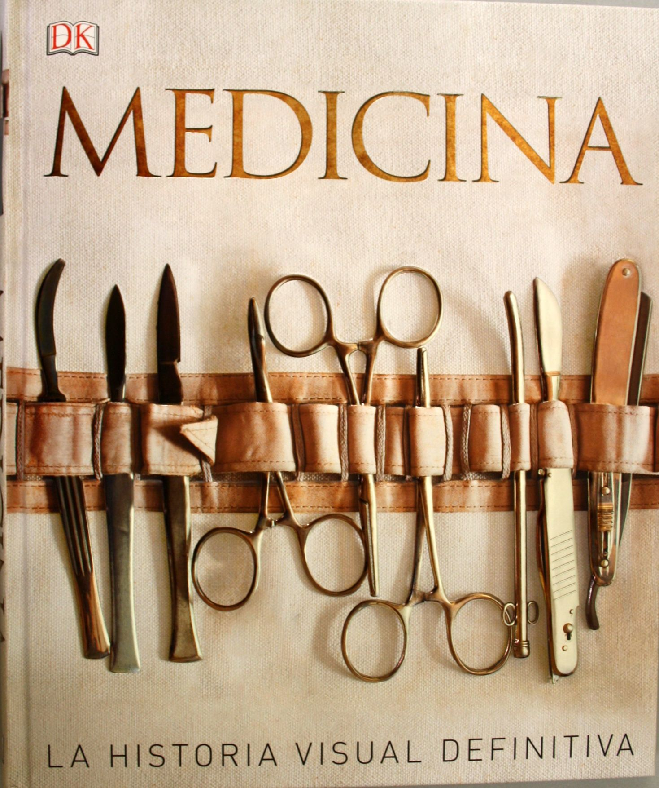

HISTORIA DE LA MEDICINA |
INICIO | HISTORIA | AREAS | ESPECIALIDADES | CONTACTOS |
|  | |||||
Medicina es la 'ciencia de la sanación' o práctica del diagnóstico, tratamiento y prevención de alguna enfermedad, infección o dolencia. Medicina también es sinónimo de medicamento o remedio.
La medicina moderna incluye varias áreas de ciencia y de práctica que incluyen dentro de la ciencia de la salud las siguientes divisiones:
En el pasado la mayor parte del pensamiento médico se debía a lo que habían dicho anteriormente otras autoridades y se veía del modo tal que si fue dicho permanecía como la verdad. Esta forma de pensar fue sobre todo sustituida entre los siglos XIV y XV, tiempo de la pandemia de la peste negra.1 Asimismo, durante los siglos XV y XVI, la anatomía atravesó un gran avance gracias a la aportación de Leonardo Da Vinci, quien proyectó junto con Marcantonio della Torre, un médico anatomista de Pavía, uno de los primeros y fundamentales tratados de anatomía, denominado Il libro dell'Anatomia. Aunque la mayor parte de las más de 200 ilustraciones sobre el cuerpo humano que realizó Da Vinci para este tratado desaparecieron, se pueden observar algunas de las que sobrevivieron en su Tratado sobre la pintura.
Se puede decir que la historia de la medicina tal y como la conocemos actualmente comienza con hipócrates, que fue el primer gran médico que vivió en la Antigua Grecia hace 2.400 años. Fue el primero que describió muchas de las enfermedades e indicó los remedios que la ciencia de entonces podía facilitar para remediarlos. Obligaba a sus alumnos a pronunciar un severo juramento, mediante el cual cada médico se obligaba a ayudar al enfermo, a conquistar su confianza, a proteger siempre la vida y a conservar el secreto de una enfermedad. Todavía hoy pronuncian los médicos ese mismo juramento de Hipócrates o juramento hipocrático.
Los principios básicos de Hipócrates fueron continuados por Erasístrato y por Herófilo. Que consiguieron grandes avances en fisiología y anatomía humana. Avicena fue un médico árabe. Concentró todo su conocimiento en un conjunto de 5 libros denominados Canon plasmó todo su conocimiento. El Canon se tradujo a varios idiomas y fue utilizado para estudiar medicina en toda Europa hasta el siglo XVI. Hasta hace unos trescientos años, la ciencia médica siguió siendo casi la misma de los antiguos. El hombre conocía muy pocas cosas sobre su cuerpo e ignoraba las verdaderas causas de muchas de sus enfermedades. Aplicaba hierbas medicinales y algunos medios extraños y prácticas supersticiosas. Como curiosidad, la profesión de cirujano era ejercida en muchos países por… ¡¡los barberos!!
Pero, hace tres siglos, mientras Galileo Galilei enfocaba su telescopio hacia las estrellas, otros científicos observaron el funcionamiento de la circulación de la sangre y los órganos internos del cuerpo, comenzando a emplear el microscopio. Así fue cómo se descubrió la existencia de los microbios y se llegó a la conclusión de que muchas enfermedades eran originadas por ellos. El francés Pasteur, hace cien años, lo demostró claramente. El inglés Jenner practicó la primera vacuna contra la viruela.